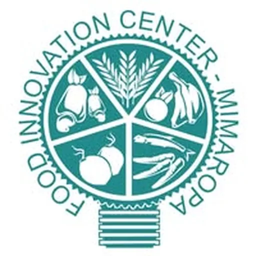

DOST-MIMAROPA Food Innovation Center (MinSU)
Mindoro State University (MinSU) · Region IV-B
The DOST-MIMAROPA Food Innovation Center (FIC) is housed at Mindoro State University (MinSU) in Victoria, Oriental Mindoro — formerly known as Mindoro State College of Agriculture and Technology (MinSCAT). Established under the DOST Food Innovation Center program, the center equips MinSU with DOST-developed food processing technologies — including a vacuum fryer, water retort, and spray dryer — enabling the development of new food products from MIMAROPA's abundant agricultural produce, tropical fruits, root crops, and marine resources.
- Category
- Food Innovation Center
- Host institution
- Mindoro State University (MinSU)
- City
- Calapan City, Oriental Mindoro (MinSU Calapan City Campus)
- Region
- Region IV-B
- Operating status
- Operating
About the Center
Managed under MinSU's research and extension offices, the FIC serves MSMEs, farmers, fisherfolk, and community enterprises across the MIMAROPA region (Mindoro, Marinduque, Romblon, and Palawan) by providing a facility for product development, food safety assistance, and packaging and labeling support. The dedicated FIC Facebook page (facebook.com/ficmimaropa, 1.3K+ followers) serves as the center's primary communication channel for MSME clients, product showcases, and technology inquiries, reflecting an active community of regional food entrepreneurs engaging with the center.
Programs & Services
- Product Development — Assistance for MSMEs and community enterprises in developing new food products using vacuum frying, retorting, and spray-drying technologies from DOST
- Vacuum Frying — Production of low-oil, crispy fruit and vegetable chips using vacuum fryer technology for shelf-stable, export-quality snack products
- Water Retort Processing — Development of heat-sterilized, shelf-stable pouched and canned food products for extended shelf life and food safety compliance
- Spray Drying — Conversion of liquid food ingredients into powder and encapsulated forms for functional food products and ingredient supply
- Packaging & Labeling Assistance — Support for MSME packaging design, FDA label compliance, nutritional labeling, and export-ready product packaging
- Food Safety & Quality Advisory — Guidance on Good Manufacturing Practices (GMP), food safety standards, product formulation, and regulatory pathways for MIMAROPA food entrepreneurs
Contact
Sources & references
- region4b.dost.gov.ph/dost-mimaropa-inaugurates-the-food-innovation-center
- mimaropa.neda.gov.ph/dost-4-b-establishes-mimaropa-food-innovation-center
Details are drawn from public records and the sources above, July 2026.
Startupreneur Innovation Hub · synced from the Notion catalog (July 2026) · status: published.